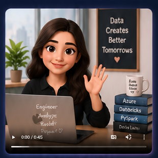
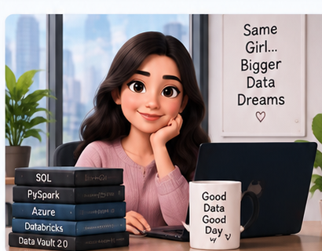

Hi, I'm
Nandini Upputholla
Building Data-Driven Solutions for a Better Tomorrow
Data Engineer with hands-on experience in Azure Databricks, Azure Data Factory, PySpark, SQL, Delta Lake and Data Vault 2.0, focused on building reliable, validated and scalable data pipelines.

Data engineering with a quality-first mindset.
I build cloud data workflows from ingestion through transformation and curated layers, with strong attention to schema validation, data quality, testing and traceability.
About Me
I'm Nandini Upputholla, a Data Engineer with experience in Azure-based data engineering workflows. My work includes Azure Databricks, Azure Data Factory, PySpark, SQL, Delta Lake and Data Vault 2.0.
I enjoy solving practical data problems, building maintainable pipelines and continuously learning modern cloud data technologies.

Technical Stack
Technologies I use across data engineering, cloud platforms, programming and analytics.
Data Pipeline I Work On
Professional Journey
Accenture experience across Azure data engineering, application development, testing and deployment.
Accenture · Packaged App Development Associate
2025 – Present- Developed curated-layer data pipelines using Azure Databricks and Delta Lake with schema validation and technical data quality checks.
- Developed Azure Data Factory pipelines for automated ingestion and transformation from the Landing Layer.
- Worked with Raw Data Vault and Business Data Vault using Data Vault 2.0 concepts including Hubs, Links and Satellites.
- Implemented ingestion while maintaining consistency, integrity and quality; worked on logging and audit tracking.
- Performed unit testing, data validation, environment validation and pipeline execution using Azure Portal, Databricks, DevOps and PR workflows.
Accenture · Packaged App Development Associate Intern
2025- Supported application development, testing, debugging and deployment activities.
- Worked with Azure Databricks during data engineering development and testing activities.
- Developed a Python-based Data Masking Tool and worked with configurable masking rules and data transformation techniques.
Featured Projects
Practical projects demonstrating data engineering, Python and machine learning foundations.
Data Masking Tool
Python-based tool to protect sensitive information for secure testing and data sharing using configurable rules, Faker-generated values, hashing and transformations.
Chronic Kidney Disease Prediction
Machine learning project using patient-related data with preprocessing, missing-value handling, model training, testing and classification evaluation.
Coding & Professional Platforms
Find me across professional and coding platforms.
Education
Prasad V. Potluri Siddhartha Institute of Technology
Vijayawada
B.Tech — Computer Science & Engineering
2021–2025 · CGPA 8.91/10
Certifications
Databricks Data Engineer Associate · NPTEL Elite + Silver C Programming · Infosys Springboard Python · Spoken Tutorial SQL · HackerRank C++
Achievements
Participated in Flipkart GRiD at a national-level competition; organized and coordinated cultural events as a Cultural Club Organizer.
Let's build something useful.
Open to Data Engineering opportunities, collaborations and interesting technical conversations.
nandiniupputholla8@gmail.com · +91 9390451070